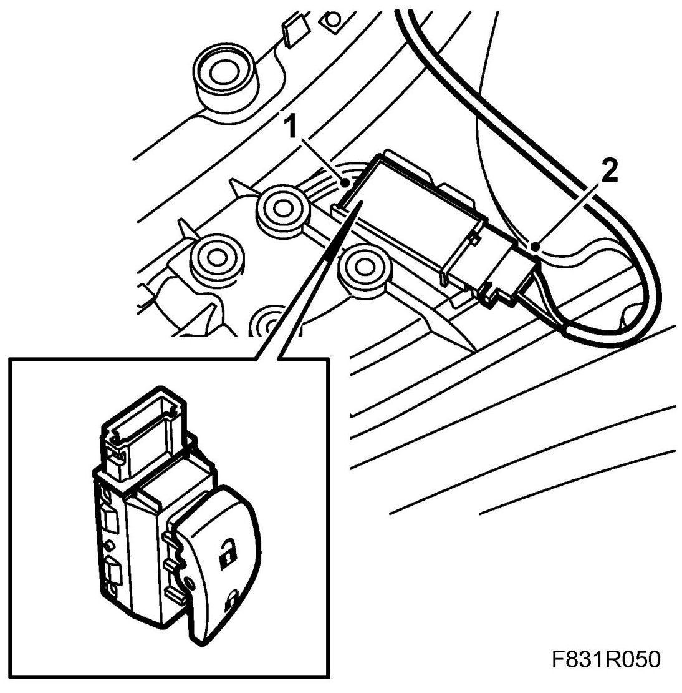

Power Door Lock Switch: Service and Repair
Central Locking System Door Switch
Removing
1. Remove the Front door trim.
2. Remove the switch's connector.
3. Pry up the switch's snap-in holder and remove the switch.
Fitting
1. Push in the switch and ensure the clips are secured.

2. Fit the switch connector.
3. Fit the door trim.
4. Cars with pinch protection: Perform Programming of the pinch protection.